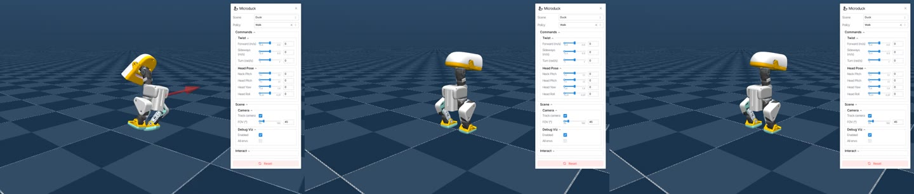

PATIENT熬 / DATAWHALE STUDY JOURNAL
让理解，
发生在行动中。
从篮球上的小鸭子，到感知、规划与控制。把每一次实验、每一段影像和每一页笔记，放在同一个可回访的地方。
浏览学习档案 ↗启动 MicroDuck 仿真 ↗
02学习专题
07任务档案
02本机物理仿真录像
∞随时回看 · 继续实验
01 / FIELD NOTES
学习，留下可追溯的证据。
正在加载笔记…
02 / MOTION STUDIES
看见控制的每一刻。
本机录制 · 随播随停 · 支持全屏
03 / PLAY & UNDERSTAND
调一个参数，理解一次变化。
04 / EVIDENCE MATTERS
知道做到了哪里，也知道下一步。
MicroDuck 已有物理仿真录像与可交互构建。Hello-Robot 的当前结果涵盖离线运动学、合成雷达建图、规划及数据管线；完整 Isaac Sim、实时 YOLO、π0.5 和前沿模型部署仍待完成。每篇笔记保留对应证据与来源。
查看离线实验报告 ↗素材来源与许可 ↗